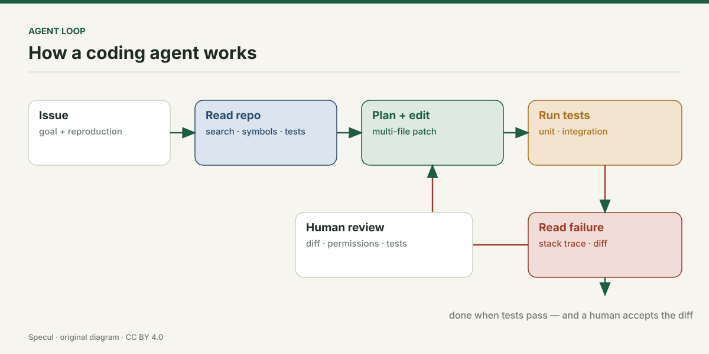

编码 AgentCoding Agent
Coding Agent
解决什么问题What problem it solves
能读代码库、改多个文件、跑测试并根据报错继续修的 AI 工具。An AI tool that reads a codebase, edits multiple files, runs tests and keeps fixing from failures.
这是什么What it is
与代码补全不同，编码 Agent 接受一个任务目标，自主规划并执行编辑、命令和验证。
SWE-bench 用真实 GitHub issue 检验这类系统能否产出通过测试的补丁。
Unlike code completion, a coding agent takes a task goal and autonomously plans edits, commands and verification.
SWE-bench tests such systems on real GitHub issues: can they produce a patch that passes the tests?

为什么需要知道Why it matters
它改变的是工程流程而不是单行输入速度；审查、权限和测试仍是必需，不能把「通过率」当成交付质量。It changes the engineering workflow, not just typing speed. Review, permissions and tests remain necessary; a pass rate is not delivery quality.
别名Chinese aliases
coding agent · 编码智能体 · 代码智能体
同域词条Terms in the same area